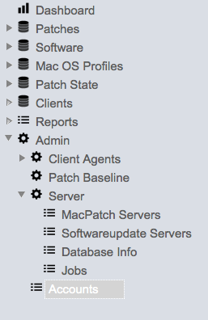
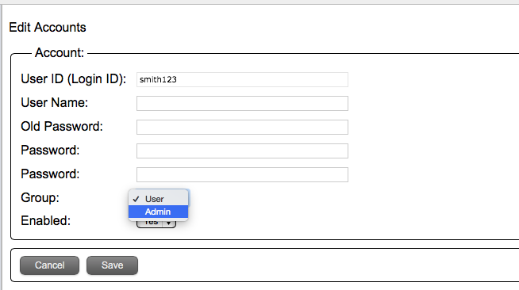

Authentication Settings

If you selected "Secure Connection" (SSL) make sure you have the appropriate port number. You will also need to add the ldap server certificate to the Admin server security store. To do this you will need to run the "addRemoteCert.py" script.
Example:
sudo /Library/MacPatch/Server/conf/scripts/addRemoteCert.py -c "my.ad.server:3269"
Once the certificate has been downloaded and installed, the Web Admin Service will need to be restarted.
Additional Information
Once the LDAP authentication is setup and working it is important to know that any authenticated user will be allowed to log in to the MacPatch admin console. The user type by default is set to "user" which has no privileges, an admin user will need to toggle the LDAP user group setting to admin to administer the server.

Select "Accounts"

Select the user and click the pencil to edit.

Toggle the group from "User" to "Admin" and click the "Save" button.
Advanced
It is recommended that you narrow the scope of authenticated users from your LDAP directory. To do this you need to edit the “Application.cfc” file located in “/Library/MacPatch /Server/tomcat-mpsite/webapps/ROOT/admin/Application.cfc”. The “filter” string should be located on or around line 299 in the file. Once edited you will need to stop and start the Web Admin Service.
Default:
filter="(&(objectClass=*)(#application.settings.ldap.loginAttr#=#arguments.username##application.settings.ldap.loginUsrSufix#))"
With Group (In Bold):
filter="(&(objectClass=*)(#application.settings.ldap.loginAttr#=#arguments.username##application.settings.ldap.loginUsrSufix#)(memberOf=CN=MacPatch-Admins,OU=Groups,DC=example,DC=com))"
Default Account
The default MacPatch admin account is only applicable to the master server. It is recommended that you change the password at a minimum. Edit the "/Library/MacPatch/Server/conf/etc/siteconfig.json" file under settings > users > admin. Once edited you will need to stop and start the Web Admin Service.
User: mpadmin